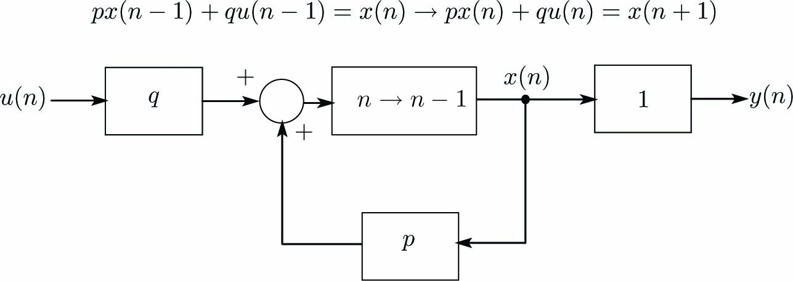

時間微分方程式\(\dot x + ax = bu\)を下記のように記述します。
\begin{align} \left. \begin{array}{@{\,}rl} \dot x &= -ax + bu\\ y &= ~x \end{array} \right\} \label{eq:SysEqn} \end{align}式\eqref{eq:SysEqn}はすでに１変数の 連続時間状態方程式 になっています。
式\eqref{eq:SysEqn}をブロック線図で表現すると下図になります。 このブロック線図では負帰還(ネガティブフィードバック)が表現されています。
式\eqref{eq:SysEqn}に\(x=c(t)e^{-at}\)を代入すると次式が得られます。
\begin{align} \dot c(t) = bu(t)e^{at} \label{eq:SysEqn2} \end{align}式\eqref{eq:SysEqn2}を積分すると次式になります。
\begin{align} c(t) = b\int_0^t u(\tau)e^{a\tau}d\tau + D \label{eq:SysEqn3} \end{align}ここに、\(D\)は積分定数です。
\(c\)を\(x=ce^{-at}\)に代入すると\(x\)は次式となります。
\begin{align} x(t)=De^{-at} + b\int_0^t u(\tau)e^{a(\tau - t)}d\tau \label{eq:SysEqn4} \end{align}\(t=0\)のときx=D=x(0)となるので、式\eqref{eq:SysEqn4}は次式となります。
\begin{align} x(t)=e^{-at}x(0) + b\int_0^t u(\tau)e^{a(\tau - t)}d\tau \label{eq:SysEqn5} \end{align}さて、ここから離散化にとりかかります。サンプリング周期を\(T\)として、\(t=nT\)のとき式\eqref{eq:SysEqn5}から次式が得られます。
\begin{align} x(nT)=e^{-anT}x(0) + b\int_0^{nT} u(\tau)e^{a(\tau - nT)}d\tau \label{eq:SysEqn5_1} \end{align}次に、\(t=(n+1)nT\)のとき式\eqref{eq:SysEqn5}から次式が得られます。
\begin{align} x((n+1)T)=e^{-a(n+1)T}x(0) + b\int_0^{(n+1)T} u(\tau)e^{a(\tau - (n+1)T)}d\tau \label{eq:SysEqn6} \end{align}式\eqref{eq:SysEqn5_1}の両辺に\(e^{-aT}\)を乗じて、式\eqref{eq:SysEqn6}の両辺から引くと次式が得られます。
\begin{align} x((n+1)T)-e^{-aT}x(nT) =& b\int_0^{(n+1)T} u(\tau)e^{a(\tau - (n+1)T)}d\tau - be^{-aT}\int_0^{nT} u(\tau)e^{a(\tau - nT)}d\tau \nonumber\\ =& b\int_0^{(n+1)T} u(\tau)e^{a(\tau - (n+1)T)}d\tau - b\int_0^{nT} u(\tau)e^{a(\tau - (n+1)T)}d\tau \nonumber\\ =& b\int_{nT}^{(n+1)T} u(\tau)e^{a(\tau - (n+1)T)}d\tau \label{eq:SysEqn6_1} \end{align}\(\tau\)の区間\([nT,(n+1)T]\)で\(u(\tau)=u(nT)\)(一定)とし、\(\tau^\prime=\tau-nT\)に変数変換すると、式\eqref{eq:SysEqn6_1}は次式になります。
\begin{align} x((n+1)T)=e^{-at}x(nT) + b\{\int_0^T e^{a(\tau^\prime - T)}d\tau^\prime\}u(nT) \label{eq:SysEqn7} \end{align}式\eqref{eq:SysEqn7}の\(x(nT)\)、\(u(nT)\)をそれぞれ\(x(n)\)、\(u(n)\)と表記して\(\tau^\prime\)を\(\tau\)に置き換え、
\begin{align} p=e^{-aT}、~~~q=b\int_0^T e^{a(\tau - T)}d\tau \end{align}とおくと、１変数の離散時間状態方程式が得られます。
\begin{align} \left. \begin{array}{@{\,}rl} x(n+1)&= ~px(n) +qu(n)\\ y(n) &= ~x(n) \end{array} \right\} \label{eq:DiscSys} \end{align}式\eqref{eq:DiscSys}をブロック線図で表現すると下図になります。 このブロック線図では負帰還(ネガティブフィードバック)が表現されています。
